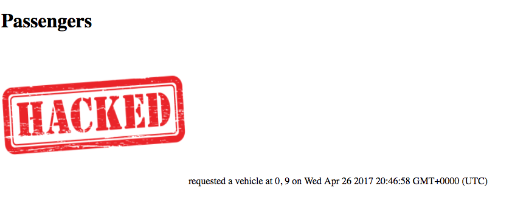
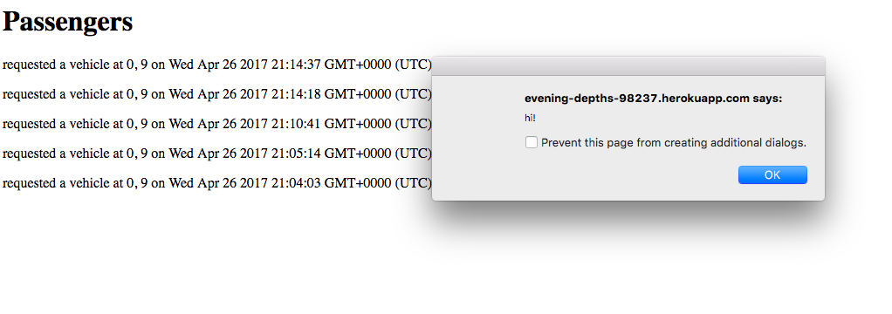
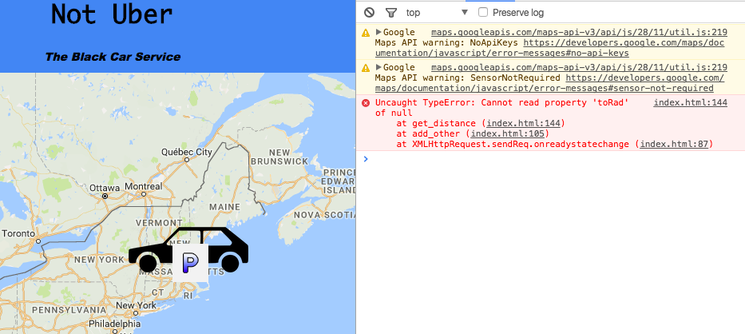

COMP 20 Assignment 4: Security and Privacy Assessment
By Rebecca Redelmeier
Date: April 25, 2017
INTRODUCTION
I am examining the security of a Comp 20 student's (namely James Gregoire) Assignment 2 and Assignment 3 for the class. For each assignment, I will analyze the potentials risks for breaches of priavacy and security in the application from a user. Below is an outline of each assignment:
Assignment 2: Not Uber AKA The Black Car Service
This application uses the Google Maps API and to send a user's location to a Mongo database and return the location of either cars or passengers that have been recently requested. What is returned it determined by the username of the user. This application sends POST requests.
Assignment 3: The Server for The Black Car Service
This application builds the heroku server that hosts the mongo database to which users' information can be sent, stored, and then returned to the passengers/vehicles who make appropriate requests. This server can take GET and POST requests.
The Big Picture
Together, assignments 3 and 4 construct a ride summoning service that requires the user to send information to the server, a server to store the information, and the server to send particular information back to the user. These GET and POST requests are a red flag for security risk because, after all, we can never trust user input!
METHODOLOGY
I used Postman to send a variety of different post requests to the server that manipulated the web page.
ABSTRACT OF FINDINGS
I found that I was able to change the user's experience of using both ends of the application through sending manipulative input to the server. By sending input that would be read as "code" rather than a username, latitude, or longitude that the application was prepared for, I could change what the pages that any user accesses would look like. I was also able to create errors in the application itself by sending information that the application was not prepared to handle. These modifications were stores in the database that I was sending them to, and thus impacted each use of the application and not just the uses where I was hacking the system.
ISSUES FOUND
Adding Images to the Root Index Page
Location:
POST request causes issue, GET request to Root Index Page shows issue
Severity:
Moderatly severe. Can be remediated on developer's end by emptying the database. Does not breach any security. Does prevent usability of the server's root page. Does not prevent usability of the Not Uber app but does hinder it.
Description:
By putting an image script in place of a username in the POST request, I could add an image to the root index page that was meant to display passengers and locations. I could manipulate the image size so that the entire page was taken up by it and thus unusable.
Proof:

Resolution:
Check for special characters in input to ensure that no links to image sources are being passed and only desired strings/floats are being inputted by user. Code: input.replace(/[^\w\s]/gi, '')
Adding CSS and JavaScript Code to the Application
Location:
POST request causes issue, GET request to Root Index Page shows issue
Severity:
Similar to adding an image with POST request it is moderatly severe risk as it still can be remediated on developer's end and does not breach any security. Does prevent usability of the server's root page. Does not prevent usability of the Not Uber app but does hinder it.
Description:
I was able to add CSS code to the root index page through the POST request. Below I demonstrate how I manipulated the background color of the page, but this is only a small extent of the design changes I could make with CSS input. CSS code is able to manipulate all the design of the page and thus can significantly hinder the usability of the page.
Proof:
Importantly, inputting different kinds of code into the application through the POST request can also manipulate other parts of the page. For example, I can also input JavaScript code in the same manner directly through the POST request. By doing so I can add JavaScript functions and commands to the application, such as an alert box as demonstrated below.
Proof:

Resolution:
Again, checking for special characters in input would ensure that the user could not make these attacks through the command line.
Causing Errors in the Application by Inputting Wrong Type of Data
Location:
POST request causes issue, Not Uber application index page shows issue
Severity:
Less severe risk because user does not often look at the JavaScript console. However, can make application run more slowly and less effectively.
Description
The Not Uber application expects to be sent a latitude and logitude coordinate in a float type. However, the server does not check the input that the user gives for lat and lng and thus the user can cause errors in the application. By sending the server some other type of input that cannot be converted I cause errors in the JavaScript console of the application itself.
Proof:

Resolution:
Checking the type of input that the application receives on input/output.
CONCLUSION
This application has many security risks that can have severe impacts on the usability of the application. These problems come from not checking the user's input. Because no checks are done, the user is able to feed content that manipulates the application's front end and database.
Additionaly, the application has some security risks because of its coding. For example, the list of cleared vehicle names is hard coded and thus anyone who accesses the code could manipulate the system with that knowledge. The username of the passenger/vehicle of the not uber app is also hard coded and thus poses a risk as anyone with access to the code could manipulate their user name. To store these variables more securly, they could be stored in othe files/databases that only allow CORS to particular accesors.